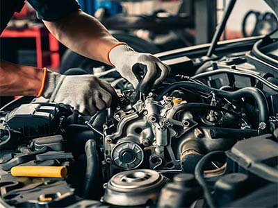
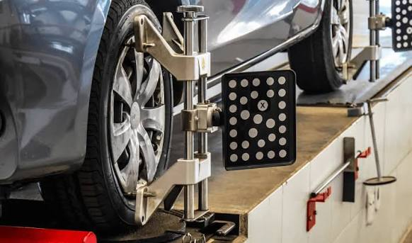
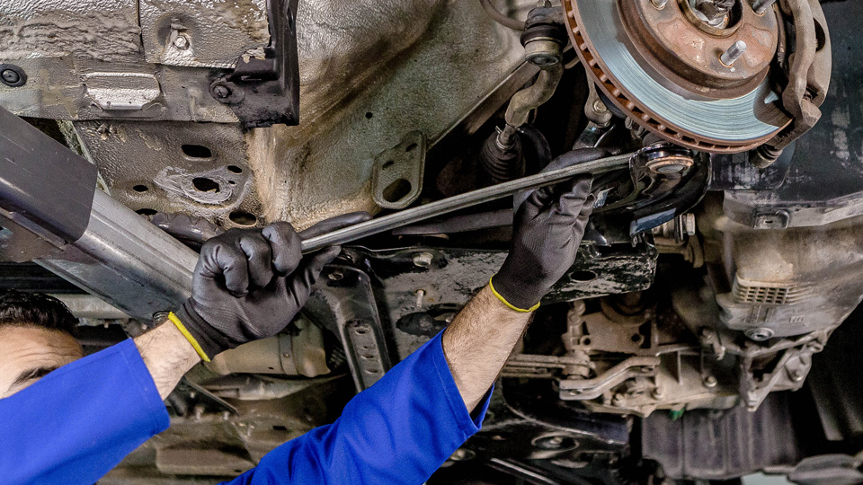
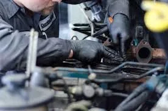

Seja Bem-vindo!
Osvaldo Motors
Conheça uma incrível oficina de mecânica e serviços, tudo especializado e feito para o seu melhor atendimento.
Seja Bem-vindo!
Conheça uma incrível oficina de mecânica e serviços, tudo especializado e feito para o seu melhor atendimento.


Substituição do óleo do motor, filtro de óleo, filtro de ar e de combustível para manter a lubrificação ideal e prolongar a vida útil do motor.

Inspeção e troca de pastilhas, discos, lonas, fluído de freio e verificação do sistema ABS para garantir a segurança nas frenagens.

Ajuste da geometria da suspensão e equilíbrio das rodas para evitar desgaste irregular dos pneus e vibrações no volante.

Troca de amortecedores, molas, buchas, pivôs e terminal de direção para manter a estabilidade e o conforto do veículo.

Uso de scanners automotivos para identificar falhas em sensores, acendimento da luz da Injeção no painel e consumo excessivo de combustível.

Manutenção pesada que envolve a troca da correia dentada, junta do cabeçote ou reconstrução parcial/total do motor em caso de superaquecimento ou desgaste.